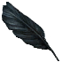

Перо ворона
Предметы / С врагов
Открыть в интерактивной вики →
| Вес | 1 |
|---|---|
| Цена | 150 |
Дроп
Описание
| - |
Применение
|
Как добыть
Получаем за победу над:
|

Открыть в интерактивной вики →
| Вес | 1 |
|---|---|
| Цена | 150 |
| - |
|
Получаем за победу над:
|